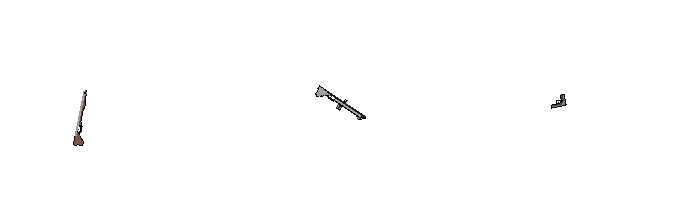

Kill Terrorists: The Game
Kill Terrorists foi um projeto que teve seu início por meados da primeira metade de 2022, a ideia veio inspirada de um dos jogos que 3kliksphilip mencionou em sua história de desenvolvimento de jogos. A ideia me pareceu interessante e fiz um protótipo extremamente básico em algumas horas(provavelmente).

O gif acima, é uma demonstração do seu primeiro protótipo. O design feio é porque esse carinha aqui, o desenvolveu o jogo sozinho. Alguns meses se passam, eu acabo decidindo que seria melhor fazer um reboot do jogo mal otimizado e feio. Com seu codinome de "attack reboot.mfa" o projeto é refeito graficamente, mecânicamente. Praticamente tudo do projeto foi refeito, e com algumas mudanças minímas e outras drásticas, como por exemplo: removi o sistema de dano hitscan porque estava afetando peformance do jogo significamente, caindo para 15 FPS quando a distância do traço chegava moderadamente alta.
O reboot, até que foi um pouco mais longe do que meus projetos normamente iriam, e com um tempo passando. Um amigo próximo ajudou à fazer alguns sprites para o jogo. esse sendo as armas.
Sim, o personagem está com excessivas quantidades de ansiedade, obrigado por perguntar. Os sprites de armas foi feito pelo Jilone8